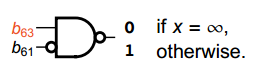
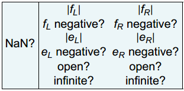
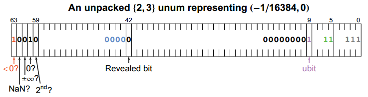

7 定长的unum存储¶

Fig. 97 image-20230615195044276¶
托马斯·贝恩斯，托马斯·贝恩斯与澳大利亚北领地的原住民在维多利亚河口附近，1857年。在瓦尔皮里原住民与其他文化有太多接触之前，他们的计数系统是“一、二、多”。
7.1 瓦尔皮里版本的unums¶
土著狩猎采集者（例如澳大利亚北领地的瓦尔皮里原住民），在接触其他文化之前，他们的数字语言仅限于“一”、“二”和“多”。 他们原来的语言现在几乎遗失了，但我们知道他们也有表示 “none”（0）、 “need”（negative） 、“junk”（NaN） 和 “all”（infinity）的词，所以从某种意义上说，他们 数字词汇表非常接近于最小可能的浮点环境，加上一个 ubit。 我们可以称之为 “瓦尔皮里unum集Warlpiri unum set”。 每个数字只需要四位来表示。
定义: Warlpiri unum是使用最小可能的格式，也就是{0, 0}环境的unum。它有一个符号位，一个指数位，一个小数位和一个ubit。 |
后面我们展示这样一个原始的4比特的值可以比高精度的浮点在避免错误回答上更高级。最好说“二乘以二是很多（many）”，而不是说“二乘以二溢出了，我们把它当成无穷吧”
硬件设计者可能更喜欢这种固定尺寸的数，因为没有域用来表示不同的esize和fsize。
如果我们不去试图节省空间设计支持一个或是两个unum的ubound，永远用两个。那么一个ubound正好是一个byte。想象一下：一个封闭的，数学上不可打断的实数表示，只需要8bit表示一个值。想象下，硬件能多快地处理这样的数。
总共有16个4bit的位串，表达了15种不同的数（正0和负0是一个数）。精度是非常的低。但是任何一个实数都有唯一的比特串表示。Warlpiri unum set 可以用来快速地计算初始bound，或是发现是否存在答案。比如在做ray tracing的时候，这么低精度通常已经可以证明一条光线是否与一个表面相交。那种可能相交，需要更高精度的计算的情况令人惊讶地少。3bit构成了一个符合IEEE浮点规则的小的值，包含隐藏位，指数偏移等等。我们只指定了两个向量表示给NaN（包括 Signaling NaN和quiet NaN）。如下图表示在实数线上方是比特位向量，接着是通常的对于数和间隔的数学表示最后一行是英文表达数量的原住民词汇。
Fig. 98 image-20230615202420916¶
小学教的加法和乘法表通常是数字 0 到 10。除此之外，您还需要推铅笔算法进行多位数运算，这让大多数学生从小就讨厌数学。 想象一下：使用 Warlpiri 实数，我们可以定义包含整个实数行的 + – × ÷ 表格，并做出在数学上无懈可击的陈述。 如果忽略 NaN 和“负零”，则有 13 个不同的 unum 输入值，因此每个表只有 169 个条目。 然而，它们提供了一个封闭的数学系统，涵盖所有实数和无穷大和 NaN 等异常情况。 考虑一种仅存储表格并查找结果的计算机设计是很有趣的，对于某些类型的计算机硬件而言，这可能比使用二进制逻辑计算它们更快。
读者的练习: 哪个Warlpiri unum开平方根数值不变？ |
作为即将出现的问题的预览，请考虑：开区间 (0, 1) 除以 (0, 1) 是多少？ 传统计算说“范围内有一个零除以零，所以答案是 NaN。” 其他人可能会说“1 除以 0 是无穷大，所以答案是无穷大。” 但是开区间 (0, 1) 永远不会是 0 也不会是 1； 它只是介于两者之间的数字。 这意味着 \((0, 1) \div (0, 1) = (0, \infty)\)。 结果区间在介于我们可以表示的最小数字（但不是零）和大于我们可以表示的数字（但不是无穷大）之间。 边界\((0, \infty)\) 是我们能做的最好的作为即将出现的问题的预览，请考虑：开区间 (0, 1) 除以 (0, 1) 是多少？ 传统计算说“范围内有一个零除以零，所以答案是 NaN。” 其他人可能会说“1 除以 0 是无穷大，所以答案是无穷大。” 但是开区间 (0, 1) 永远不会是 0 也不会是 1； 它只是介于两者之间的数字。 这意味着 (0, 1)/(0, 1) = (0, 无穷大)。 结果介于小于我们可以表示的数字（但不是零）和大于我们可以表示的数字（但不是无穷大）之间。 边界 (0, infinity) 是我们能做的最好的表示了，因为拥有更多的指数或分数位不会改变答案。 每当这种情况发生时，我们就说结果是“紧致的tight”。 请注意，紧致的结果不一定是可逆的，因为仍然有可能丢失信息。 也就是说，加法和减法不是我们希望的逆运算，其中，因为拥有更多的指数或分数位不会改变答案。 每当这种情况发生时，我们就说结果是“紧张的”。 请注意，严格的结果不一定是可逆的，因为仍然有可能丢失信息。 也就是说，加法和减法不是我们希望的逆运算，即
乘法和除法也不是我们希望的满足
对x做一个操作后紧跟着一个逆操作，得到的是一个范围，其中包含x, 也包含其他值。这也可能发生在紧致的操作上，因为零和无穷会摧毁实数的范围信息。
如果我们问\(1\div 2\)在极低精度下是什么，我们必须用范围(0, 1)表示。因为没有一个位串可以表示一半。这是一个疏松loose的结果，因为总是有信息丢失了。但是这是对于那个格式的数的一个真命题。如果我们有更多的比特，我们可以把这个结果变得tight. （注意如果我们使用IEEE标准浮点规则，但是不用ubit, 那么我们得到一个错误的结果是\(1\div 2=0\)，因为它下溢了！）
7.2 瓦尔皮里ubounds¶
ubound集合中包含15个单点unum（如上一节所示），还有78个unum对，总共93个瓦尔皮里ubounds。前面说过可以总是使用unum对来节省一个指示pair的bit，单unum的表示用两个相同数表示，总共正好是一个byte。下面列出所有的ubounds，用三种不同方式表示：数学的(通用的间隔表示)，英语语言表示的，和比特串。
Fig. 99 image-20230619085206855¶
下面是一些瓦尔皮里ubounds的操作例子：
\([1,2)-2=[-1, 0)\) |
\(-\infty+\infty=NaN\) |
\([-2, 2]\div \infty=0\) |
\((-1,2)\times(0,1)=(-1,2)\) |
\(2\times(-2)=(-\infty, -2)\) |
\(1\div 2=(0,1)\) |
如果我们试图去画一个closure图，那将是比较无趣的：一个93x93的点图，表明对于每一个操作，输入的两个ubound产生的一个输出的ubound。这证明的用一个有限长度的比特串可以在四种数学运算上构成闭包closure。设计这样一个很少比特表示的实数格式强制我们去思考当前我们在计算机上存储实数的方式有什么问题，显示了在要求更多精度前如何修正这个缺陷。如果一件事情不值得去做，就无需去考虑如何做得更好。
另外一件事情是我们可以用瓦尔皮里ubounds来创建没有缺陷的超越函数，比如
不像数学库里面做的那样，拼命去试图把所有结果去达到正确值的一个ULP精度范围，瓦尔皮里ubounds实现超越函数是很简单，虽然精度是很可笑的低，但是答案是正确的。这可以用来判断结果的存在性，避免了很多麻烦事情。比如对于一个数学问题：连续函数的\(f(x)=0\)是否有解？我们可以尝试每个实数表示，把\((-\infty, -2)\), \(-2\), \((-2, -1)\), \(-1\), \((-1, 0)\), \(0\), \((0, 1)\), \(1\), \((1,2)\), \(2\), \((2, \infty)\)作为x代入函数看结果的范围是否含有0， 如果没有那么就不需要再做更为繁琐的找根的算法(在第二部分中讨论)
读者的练习:如果我们想用Warlpili ubound实现一个EDP,完全精确的点积,向量长度可达1 billion，那么我们需要在g-layer中保留多少比特呢？ |
Warlpili ubound长度正好是一个byte，硬件无需处理变长码。
第7到11章会展开讲unum和ubund的基本操作。要搞清楚unum是如何工作的，可以使用Warlpili unum/ubound作为例子，因为这是如此少的简单的数，可以脑子直接想清楚。
7.3 unum的硬件实现：比float快吗？¶
7.3.1 处理异常代价的讨论¶
硬件通常支持到某一个IEEE浮点精度上限，超过后就需要用软件来做。多年前这条分割线是在单精度和双精度之间，而现在由于很多芯片支持双精度，这条线在双精度和四精度之间了。硬件支持unum也是同样的方式，保证支持到某个最长的比特串，长度超出后会触发软件陷阱子程序。所以第一个异常处理就是“计算已经不能有当前硬件容纳，换用软件”。
某个点上，要求过多的精度或者动态范围会导致系统存储空间不够，所以第二个异常处理就是“即使用软件处理，计算所用的空间不够了”
当确认空间够了，处理NaN, 无穷和subnormal需要特别测试这些出现的情况。硬件做这些事情通常是很痛苦的，而且通常是串行处理，是高性能实现的瓶颈。（这就是为什么SUN的工程师想丢弃对NaN的处理）。
硬件处理整数是很直接的，因为处理异常是很简单的。两个n-bit有符号数相加硬件可以直接开始计算，因为唯一可能出错的情况是结果要求多于n-bit, 也就是下溢或上溢。
IEEE浮点的异常检测就复杂和昂贵很多。是NaN吗？是无穷吗？是负数吗？你也许会认为“是否负数”只是检测符号位嘛，但是别忘了负0不是负数，所以检测需要看所有的bit。如果一个芯片设计者不小心只通过看符号位来设计开根号的运算，看到符号位置位就输出NaN，那么就会错误地把\(\sqrt{-0}\)算成NaN, 而正确结果是0. 所以你可以看到当芯片第一版测试后，勘误手册上通常就是一些这样的特例。
当IEEE浮点标准第一次发布出来时，很多芯片设计师就就咕哝着说这显然不是考虑过电路设计问题的，有那么多的特殊值需要检测。这很像一个计算机执行程序需要解码的指令。浮点计算要比定点计算多做一些依赖特定比特模式组合的重要判断。
比如：如果乘法器的逻辑设计是“如果x是正无穷，y是严格大于0的，那么积就是正无穷”。那么硬件如何检测出无穷？再声明清楚，一个IEEE半精度的浮点，IEEE标准规定只有一个比特串是表达正无穷的：\(\color{red}{0}\color{blue}{11111}\color{black}{00000000000}\). 硬件需要检测每一个bit才能确认。
要快速完成检测需要构建一个逻辑树，把16bit约减到1bit。如果只用NAND门和反相门来做，那么电路如下：
Fig. 100 image-20230619123741083¶
即使你对逻辑设计不懂，也能基本感觉到需要的复杂度和执行时间。如果一个反相器是一个单位门延迟，面积2个晶体管。一个NAND要4个晶体管面积和一个单位门延迟(CMOS逻辑)。这个逻辑树需要7个门延迟和110个晶体管。想象一下双精度浮点，那需要4倍的晶体管数量和11个门延迟。当然实际的实现会不太一样。如果所有的指数位都是1（and上所有比特），那么才会检测余下的比特是否全0， 否则就不需要检测其他比特。而要判断隐藏的领头小数位是否1，需要判断所有指数位为0（or上所有比特），树形结构也跟上面的很相似。
unum可以让硬件设计者比做IEEE浮点单元要容易一些。一个简单的可以同时省面积，执行时间，功耗和设计难度的原则是：Summary bits。总结位
7.3.2 解包unum格式和“总结位”的主意¶
如果硬件给unum一个64bit的寄存器，环境可以设置为{4, 5}永远可以放入，因为最大长度maxubits为\(1+4+5+2^4+2^5=59\) bit。
读者的练习: 环境{5,4}也可以，但是可能是个坏主意？计算下这个环境能表达的maxreal有几个十进制位。 |
{4，5}环境可以提供最多9.9个十进制位的精度，以及动态范围大到\(10^{-9873}\)到\(10^{9864}\).
使用双精度所需要浮点的位长应该是一个很好的起点。如果需要超过16b的指数，或是32b的小数都会触发软件异常。
由于maxubits只有59b或更少，64b寄存器还多出了5b. 建议可以用来让硬件跟快，小和低功耗，且易于设计。分别用一个bit给NaN,\(\pm\infty\), 零(精确或是不精确)，不是唯一的ubund中的unum（需要第二个寄存器）。这些信息都是unum已经带有的信息，但是预先计算出的单bit信息可以简化处理电路的设计。
定义: Summary bit是unum的重要fature，是从一些bit组合而来，通过预先解码unum的某种属性来节省操作时间. |
小数的隐藏位可以解码到一个显示位上，避免后面处理subnormal. 这样整个小数部分被当成正整数来处理。
我们同样也不想两步来提取信息，寄存器中es和fs域都留到最大。最后一个定长的寄存器表达的格式如下
Fig. 101 image-20230619145446130¶
summary位的创建一是从内存中读入寄存器时候解包算出来，而是算术运算后得到。其中的域如果底层指令能随便修改，会很容易创造出一个不一致的，互相矛盾的unum。所以解包后的数据一般不是给程序员摆弄的，只是给计算机系统来用。其中
“<0?” 位 : 避免处理漏掉了负零, 同时也不能为NaN, 这样也可以不用再检测下一位了
“NaN?”位 : 计算中应该只有quiet NaN这一种，因为如果是signaling NaN，那么操作就不会进行，task要停止。有时候如果设计者需要用解包后的格式表达signaling NaN，那么可以使用“<0?”位来帮助。这里用这个位来迅速返回(quiet)NaN。带NaN的计算应该是所有可能输入中最快得到结果的。
“\(\mathbf{\pm\infty?}\)”位 : 当esize, fsize，小数域的所有位都是0， 指数位全是1的时候置位这个summary。注意这四个域都是变长的，右对齐。所以还是在解码后考虑环境的设置。还记得那个110个晶体管做的无限值的树形检测电路吗，这里只需要简单用\(\overline{b_{63} \& \overline{b_{61}}}\)来计算出。这使得面积减小95%，执行时间小71%。也许芯片设计者就不太反对unum。由于解包后的格式是固定长度，也不需要rounding，异常处理可以更快更简单。解包过程本身是跟内存读取一起做的，存储的读时间通常远比解包时间长。
Fig. 102 image-20230619152519536¶
异常情况，比如x是不是NaN, 无穷，可以跟其他硬件并行运行，假设回答会是NO。这样异常处理就不会增加正常算术运算的时间。这个判断的时间是并行的，很短。如果发现结果是YES，那么可以中断正常技术，但是能量已经浪费了。如果对功耗特别要求高的可以串行进行，用了summary位也不会占用太长时间。
“0?” 位 : 输入数据是0的算术运算通常是简单的，或是exception值。比如：\(0+x=x\), \(0-x=-x\), \(x\div0=NaN\). unum可以有多种方式表达一个精确的0，而如果0是不精确的，那么表示的是靠近0的不同大小ULP空间。
“2nd?” 位 : ubound的pair位。1表示还有高位的寄存器用来存储第二部分（如果是最高的寄存器就wrap回最低的寄存器）。0就是单unum的ubound。summary位可以帮助把数装入g-layer中scratch pad的真假位上（回顾一下带？的域）。
Fig. 103 image-20230619154910550¶
下面是一个例子，解包后的64b寄存器表示一个很小的范围(-smallsubnormal, 0), 环境是{2, 3}, 就是开区间\(\left ( -\frac{1}{16384}, 0 \right)\)
Fig. 104 image-20230619155254769¶
芯片设计者注意: 空白寄存器部分是不用的，设计不应该导致耗费功耗，只要环境还是保持没有变.就像是机场的扫雪车一样，天气好的时候应该不需要启动引擎
注意当“<0?”置位的时候，“0?”可以置位，就像上面这个例子一样，表示了一个非精确的数可以处于精确零任何一边的一个ULP范围内。
读者的练习：写一个类似解包后的格式，使用宽度32b的寄存器，环境设置{3，3}。如果你不需要设计reveal位，那么可以支持环境{2，4}。需要多少逻辑来决定隐藏位？